Secolul XVII, „se caracterizează prin ornamentaţie bogată, o compoziţie complexă, dar ordonată, şi folosirea luxuriantă a culorii, luminii şi umbrei.” Se încuraja realismul şi desenele inspirate din realitate.
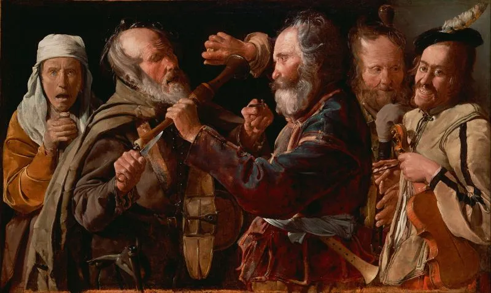
Georges de La Tour - Muzicieni în timpul unei lupte
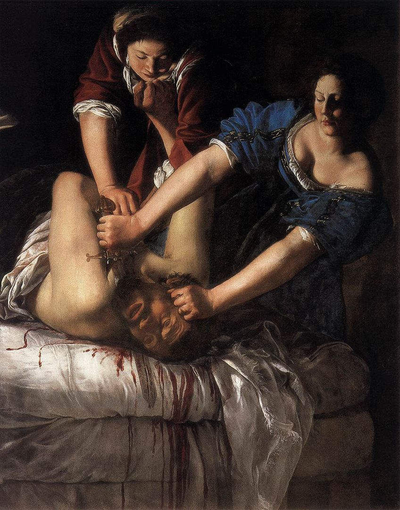
Artemisa de Gentileschi - Judith Slaying Holofernes
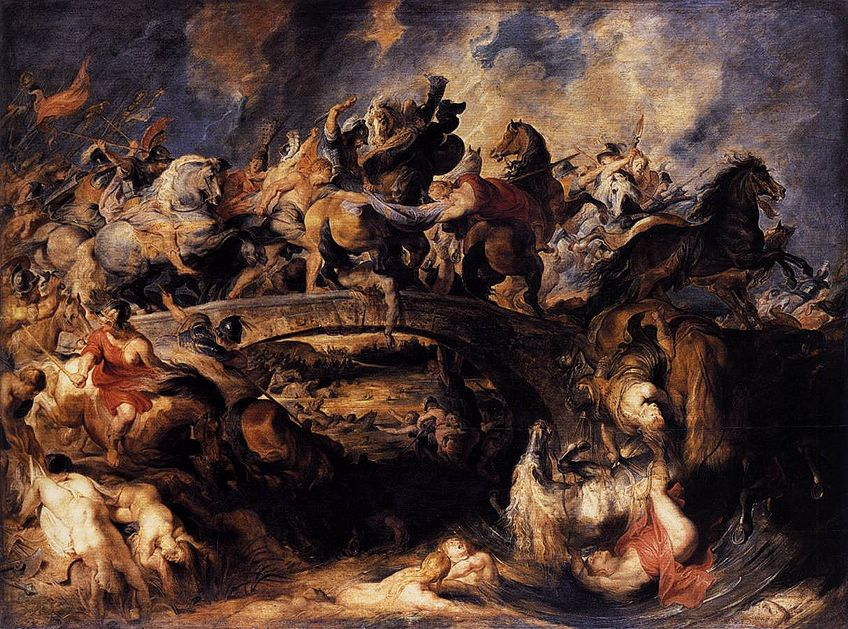
Peter Rubens - Bătălia grecilor cu amazoanele
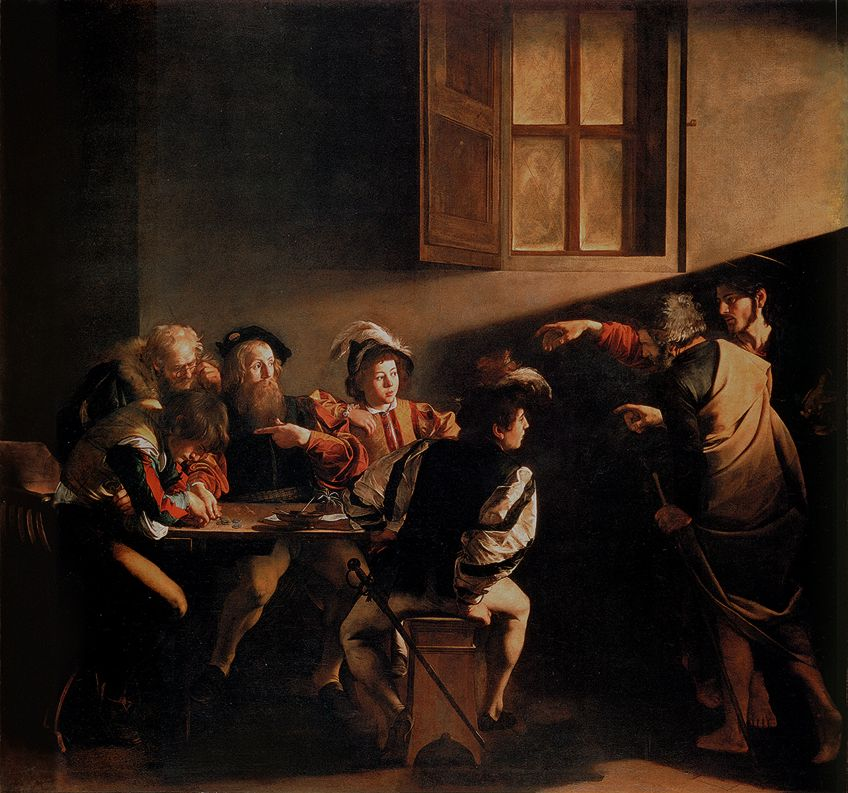
Caravaggio - The Calling of St Matthew
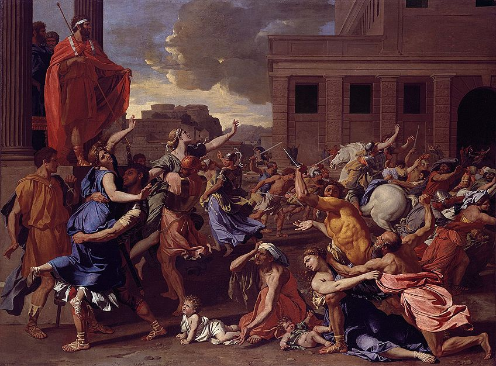
Nicolas Poussin - Abduction of the Sabine Women
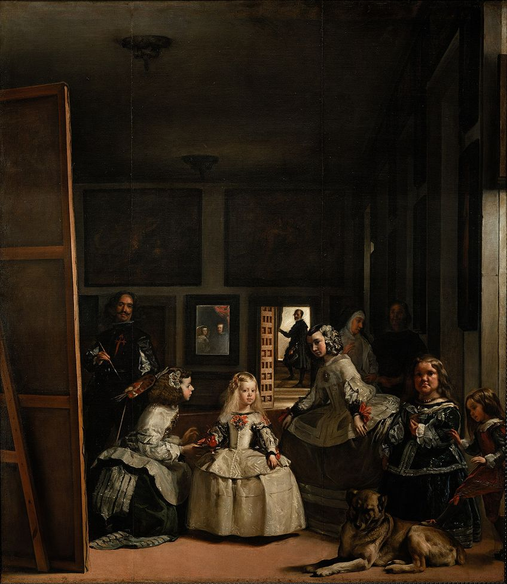
Diego Velázquez - Las Meninas
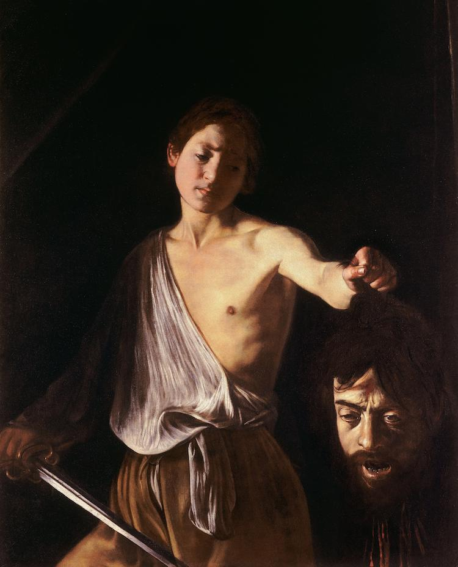
Caravaggio - David with the Head of Goliath
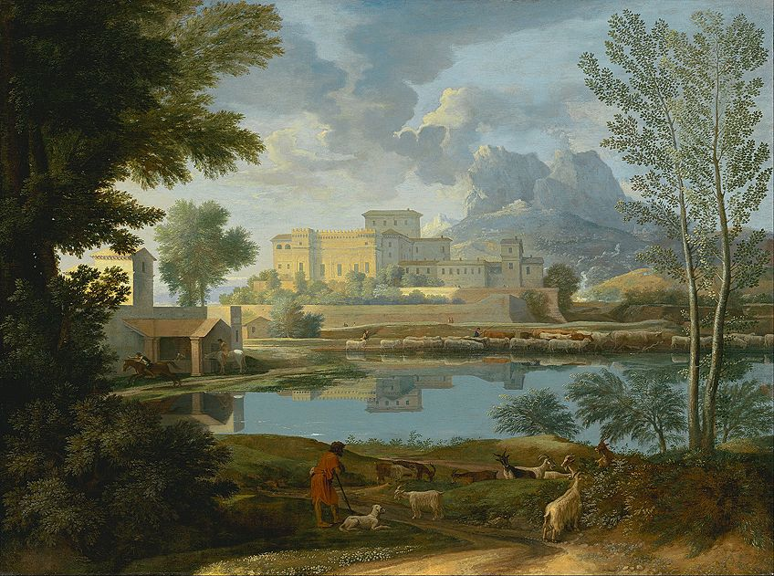
Nicolas Poussin - Calm Landscape
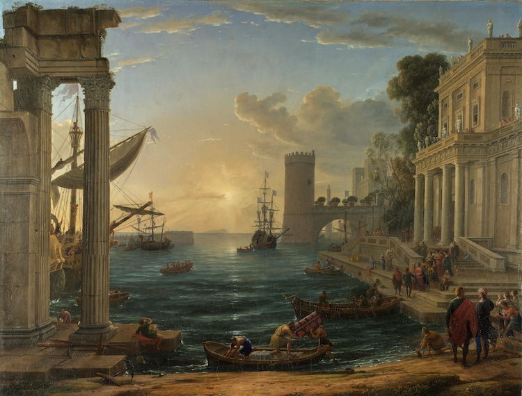
Charles Lorrain - The Embarkation of the Queen of Sheba
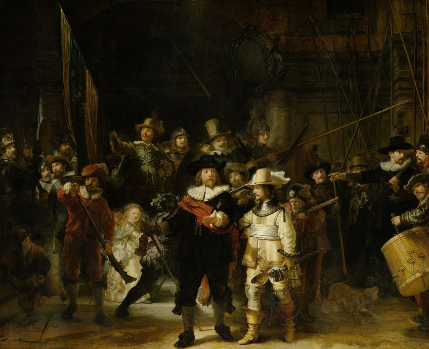
Rembrandt - The Night Watch
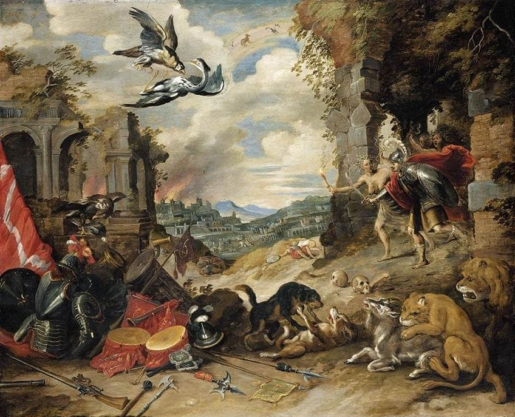
Jan Brueghel the Younger - Allegory of War
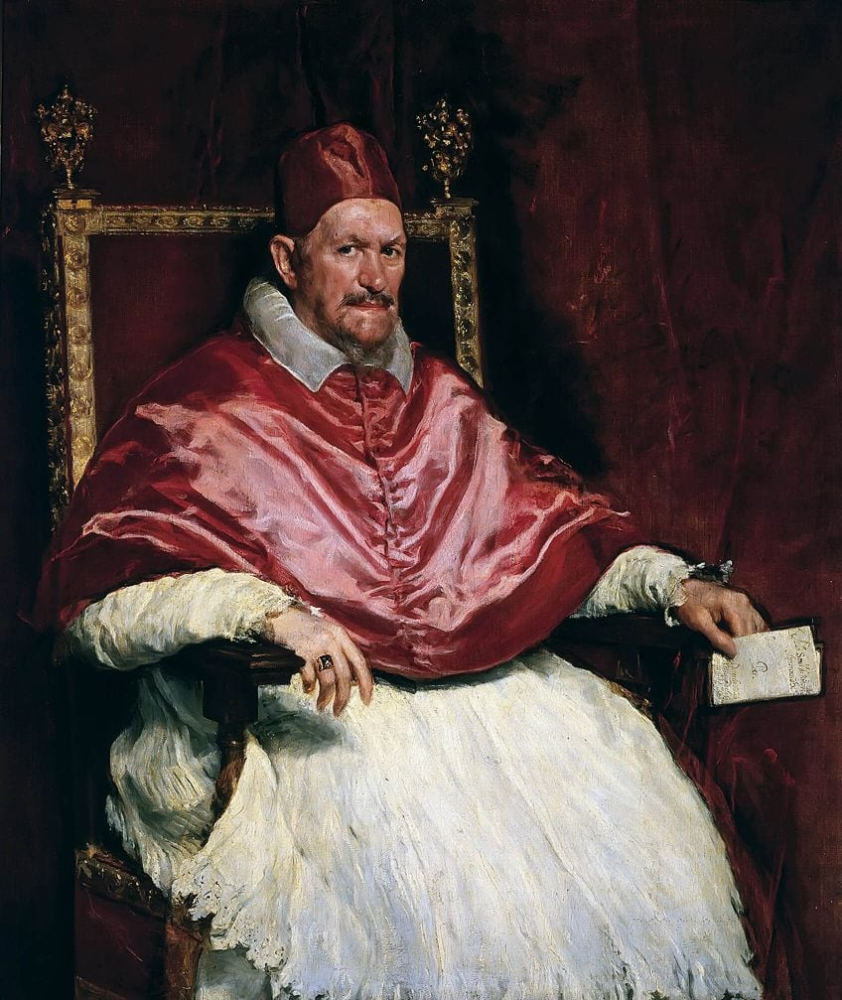
Diego Velázquez - Portrait of Pope Innocent X
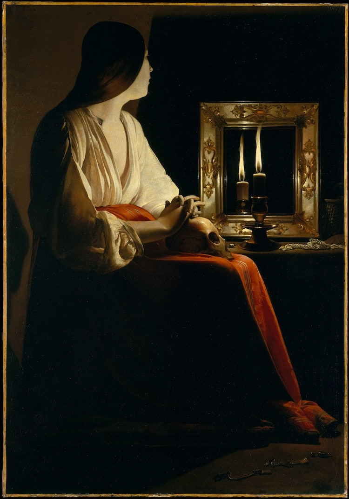
Georges de la Tour - The Penitent Magdalene